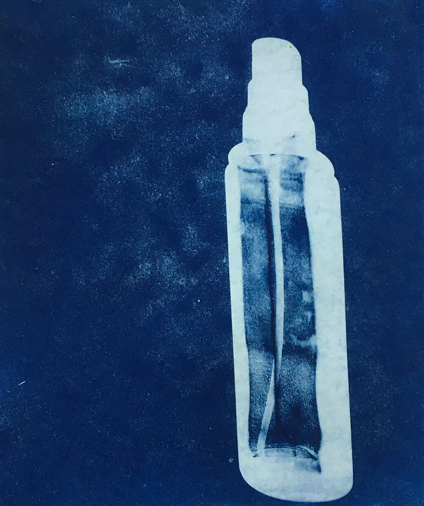
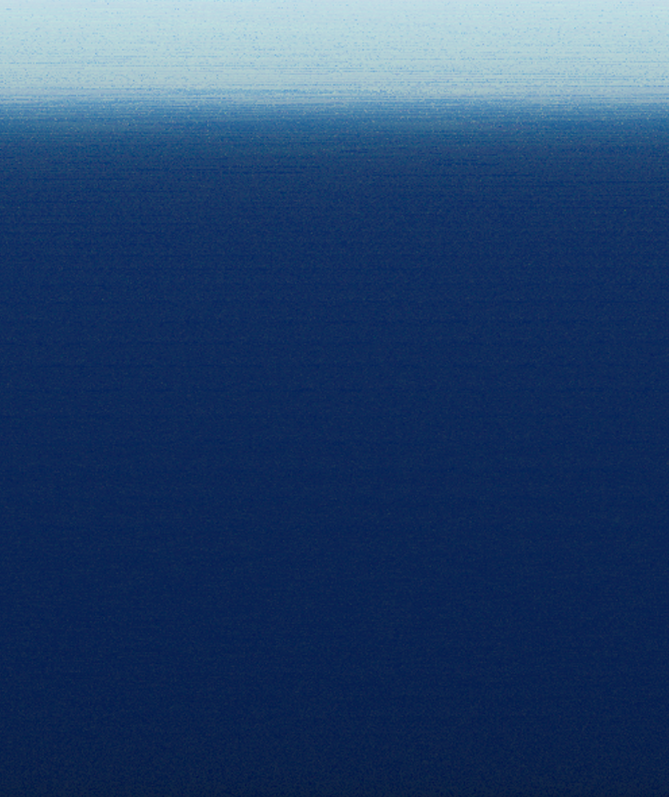
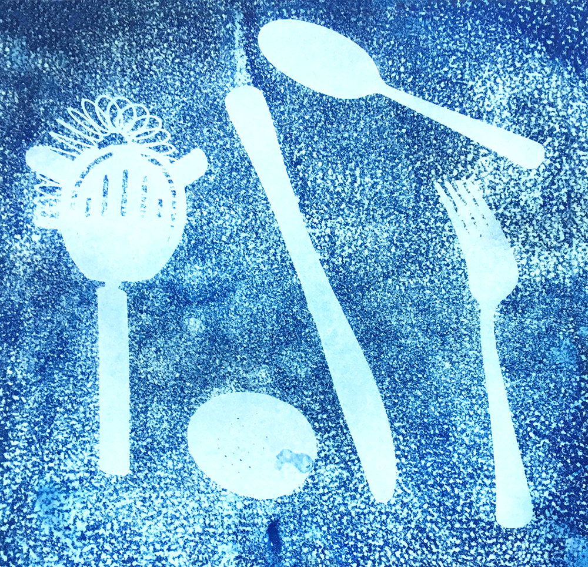
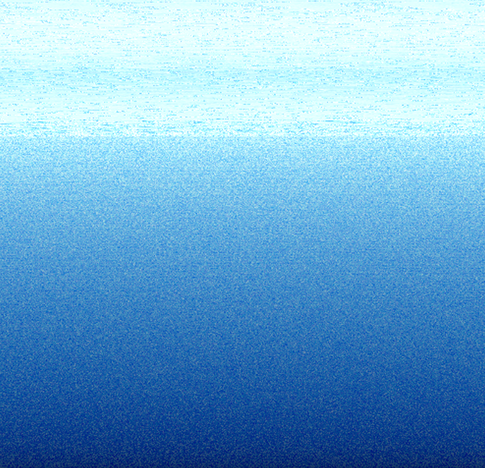

Hi! I'm
Anastasia Naumenko,
an artist and programmer based on the internet. Through my work I try to
build intimacy with the digital tools I use on a daily basis. The
biggest part of my activity focuses on languages and how they influence
social (real and virtual) structures. I use generators and algorithms as
an integral part of the creative process.I made a
short documentary
a few years ago,
an animation about immigrants' identity,
generated digital landscapes
and put
some thoughts
about modern users in form of interactive pieces(1)
(2). My friend and I have built the
first AI political party
,which is now manifesting itself on
social media platforms. Currently im working on
web series
about computer and futures. Feel free to send me a message at:
hello@anastasia-naumenko.com
During the quarantine I made cyanotype prints of everyday objects from my
flat and then transformed them into sea-views using pixel-managing
algorithms.





[close]
The animation is now on it's festival tour. It was originally pitched at
the Krakow Film Festival before being selected by Animator in Poznan and
REX in Stockholm. It’s listed as one of the best polish animations by the
Warsaw Film Festival and will have its european premiere at Interfilm,
Berlin. You can watch a
trailer
or request a screening link. :)
.jpg)
[close]
This is an ongoing project, in which I'm exploring the term naive user and
the behaviours we recognize as default while interacting with various
devices. The interfaces and patterns we use on a daily basis are
determined by a very exclusive group of developers and based on specific
ideologies. This series is an attempt to deconstruct these mechanisms in
the form of visual narration. Melanie Hoff’s “Digital Love Languages”
course inspired further thoughts on this topic.
[close]
Big Waves in Unity is the first political entity generated based on the
regulations of the most popular social media platforms and transcripts of
interviews with their CEO’s. The starting point was the idea that
Facebook, Instagram and TikTok are new political (quasi-countries?)
formations, with their own boundaries, systems of identification and
methods of punishment. Many users don’t recognize them as such, while
limiting their functioning on the internet to activity in
highly-controlled ecosystems. Using the metaphor of politicians and
elections we are participating in unconsciously, we implemented a markov
chain algorithm and fed it with official documentation of these social
networks. BWIU regulary publishes its statements on Twitter and Instagram.
You can learn more about the context of the project by listening to the
podcast (russian)
or visiting the
online exhibition website.
[close]
My friends and I began developing this idea during a Visegrad workshop at
the FilmFest Dresden. I’m working on a script for the first episode.
[close]